2026-03-17T16:02:58.947971take.workspace_position, take.marker_configuration, take.camera_configuration, take.cover_configuration1212workspace_positionmarker_configuration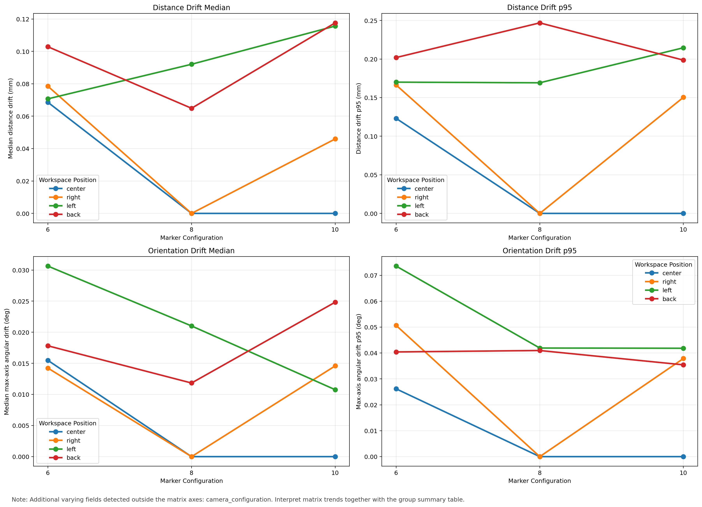
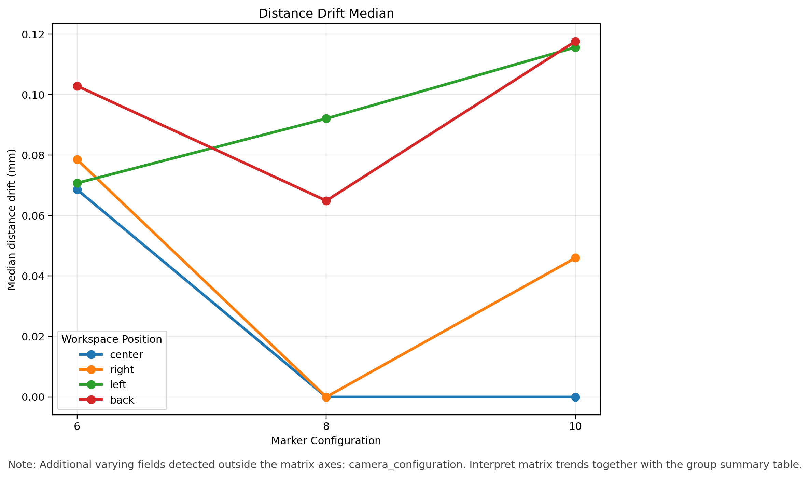
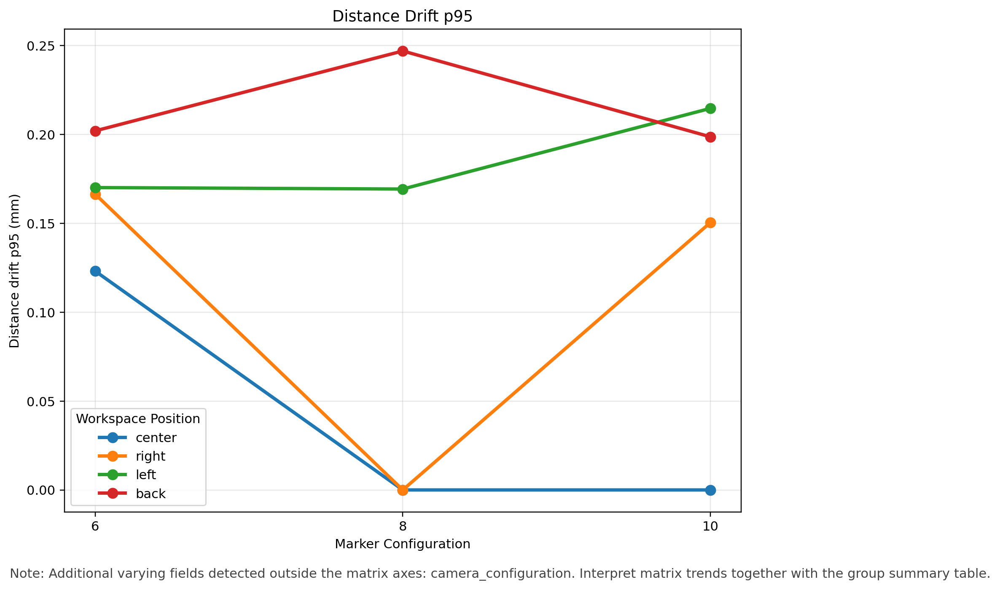
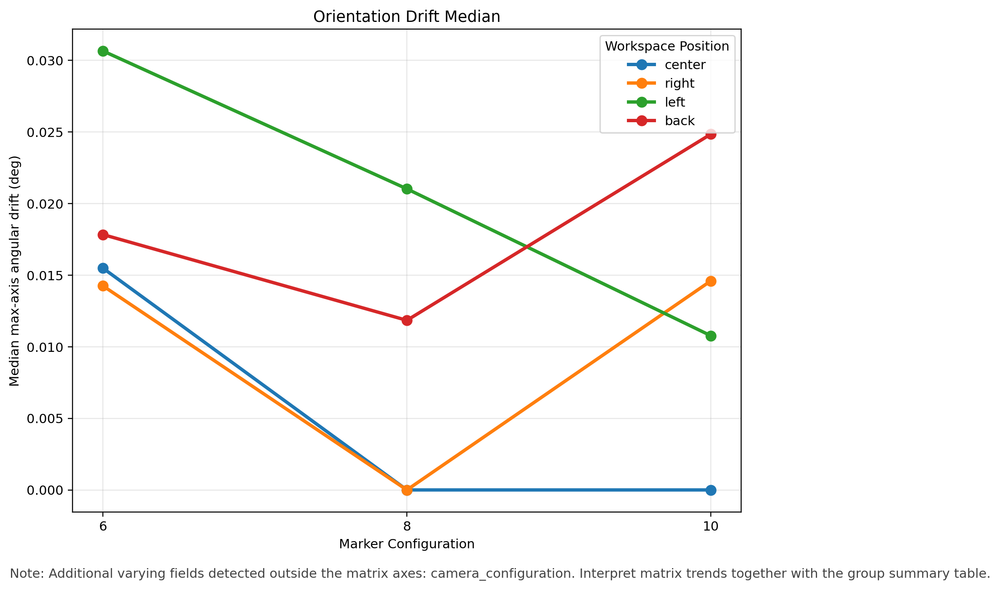
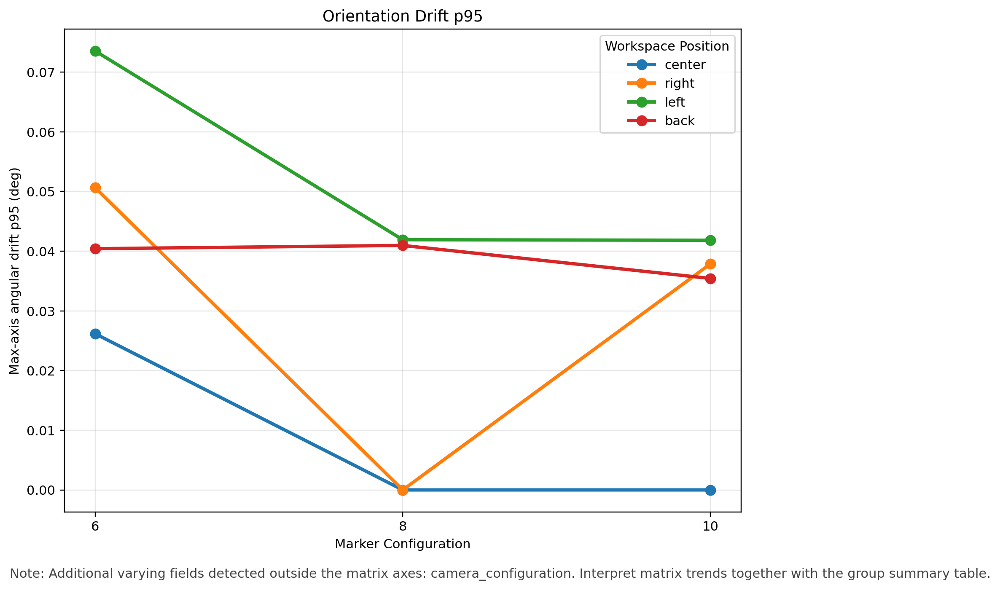
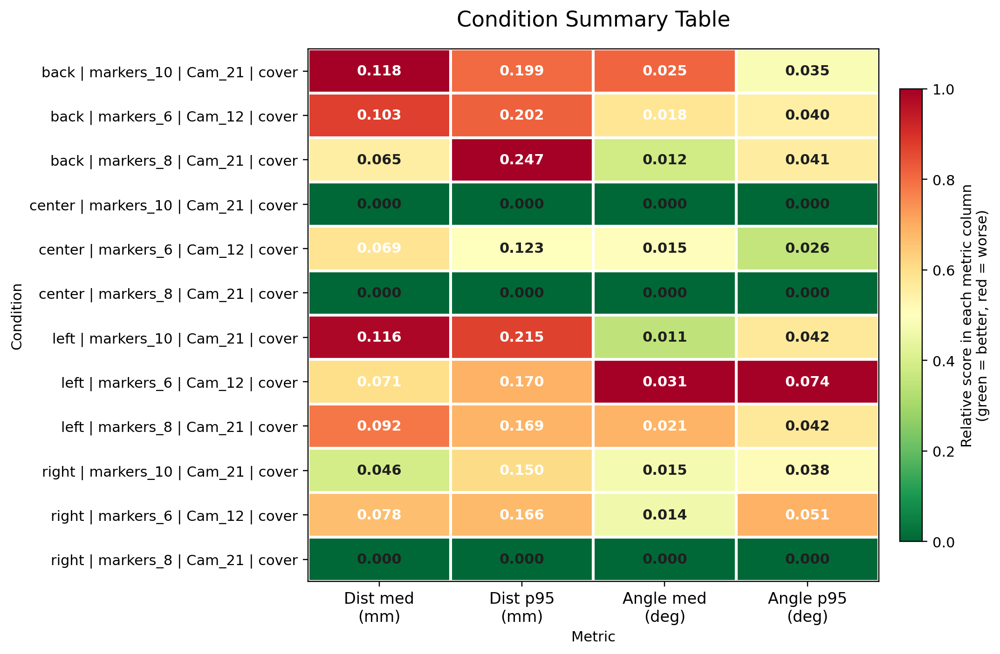
| Group | Takes | Frames | Distance median (mm) | Distance p95 (mm) | Angle max median (deg) | Angle max p95 (deg) | X median (deg) | Y median (deg) | Z median (deg) |
|---|---|---|---|---|---|---|---|---|---|
| back / markers_10 / Cam_21 / cover | 1 | 2101 | 0.118 | 0.199 | 0.025 | 0.035 | 0.023 | 0.022 | 0.013 |
| back / markers_6 / Cam_12 / cover | 1 | 2101 | 0.103 | 0.202 | 0.018 | 0.040 | 0.015 | 0.016 | 0.012 |
| back / markers_8 / Cam_21 / cover | 1 | 2101 | 0.065 | 0.247 | 0.012 | 0.041 | 0.009 | 0.010 | 0.009 |
| center / markers_10 / Cam_21 / cover | 1 | 2101 | 0.000 | 0.000 | 0.000 | 0.000 | 0.000 | 0.000 | 0.000 |
| center / markers_6 / Cam_12 / cover | 1 | 2102 | 0.069 | 0.123 | 0.015 | 0.026 | 0.014 | 0.010 | 0.012 |
| center / markers_8 / Cam_21 / cover | 1 | 2101 | 0.000 | 0.000 | 0.000 | 0.000 | 0.000 | 0.000 | 0.000 |
| left / markers_10 / Cam_21 / cover | 1 | 2101 | 0.116 | 0.215 | 0.011 | 0.042 | 0.006 | 0.009 | 0.010 |
| left / markers_6 / Cam_12 / cover | 1 | 2102 | 0.071 | 0.170 | 0.031 | 0.074 | 0.028 | 0.026 | 0.023 |
| left / markers_8 / Cam_21 / cover | 1 | 2101 | 0.092 | 0.169 | 0.021 | 0.042 | 0.011 | 0.020 | 0.019 |
| right / markers_10 / Cam_21 / cover | 1 | 2100 | 0.046 | 0.150 | 0.015 | 0.038 | 0.005 | 0.014 | 0.013 |
| right / markers_6 / Cam_12 / cover | 1 | 2100 | 0.078 | 0.166 | 0.014 | 0.051 | 0.009 | 0.013 | 0.013 |
| right / markers_8 / Cam_21 / cover | 1 | 2101 | 0.000 | 0.000 | 0.000 | 0.000 | 0.000 | 0.000 | 0.000 |
These per-frame boxplots are retained for debugging, but the heatmaps, line profiles, and summary table above should be the primary comparison figures for multi-condition sessions.
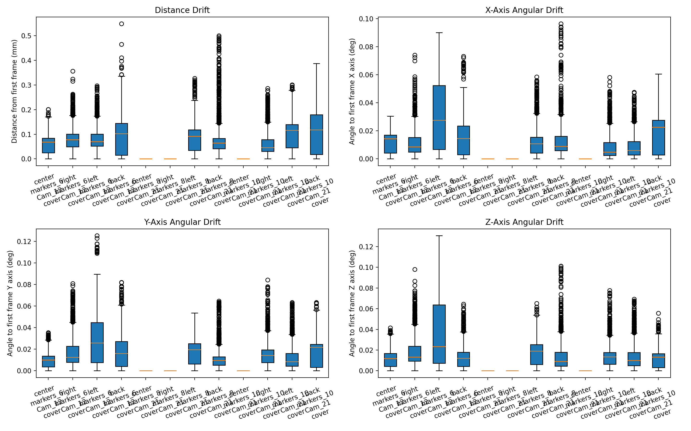
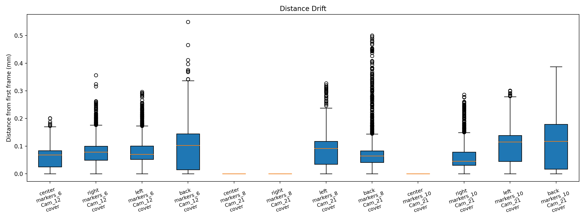
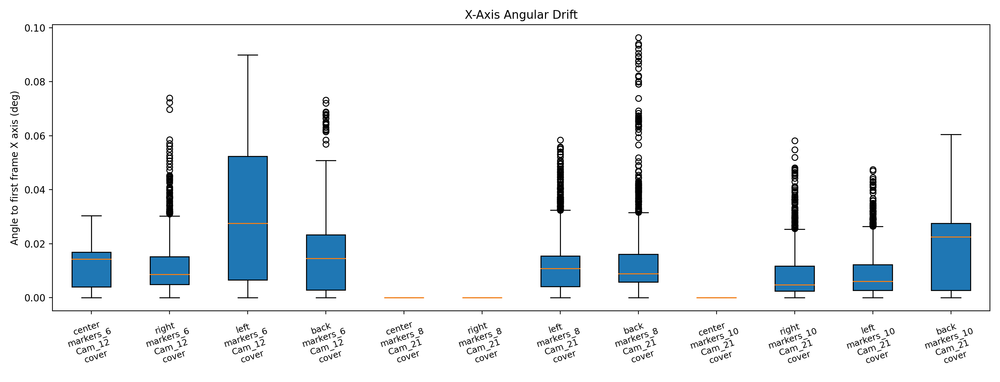
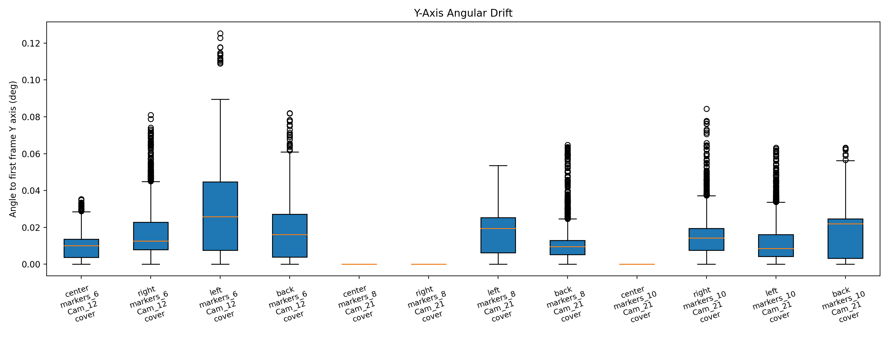
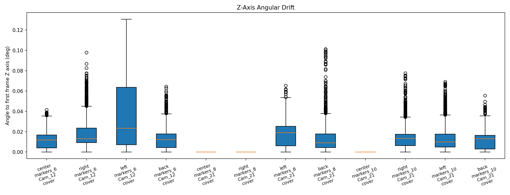
21PrimeX 22 #72657PrimeX 22 #72653PrimeX 22 #72654PrimeX 22 #72652PrimeX 22 #72317PrimeX 22 #72655PrimeX 22 #72300PrimeX 22 #72708PrimeX 22 #72656PrimeX 22 #72318Prime 13 #31328Prime 13 #31323PrimeX 13 #66106Prime 13 #31327PrimeX 13 #66078Prime 13 #31326PrimeX 13 #66077Prime 13 #31325Prime 13 #31324PrimeX 13 #66105Prime 13 #3132921PrimeX 22 #72657PrimeX 22 #72653PrimeX 22 #72654PrimeX 22 #72652PrimeX 22 #72317PrimeX 22 #72655PrimeX 22 #72300PrimeX 22 #72708PrimeX 22 #72656PrimeX 22 #72318Prime 13 #31328Prime 13 #31323PrimeX 13 #66106Prime 13 #31327PrimeX 13 #66078Prime 13 #31326PrimeX 13 #66077Prime 13 #31325Prime 13 #31324PrimeX 13 #66105Prime 13 #3132921PrimeX 22 #72657PrimeX 22 #72653PrimeX 22 #72654PrimeX 22 #72652PrimeX 22 #72317PrimeX 22 #72655PrimeX 22 #72300PrimeX 22 #72708PrimeX 22 #72656PrimeX 22 #72318Prime 13 #31328Prime 13 #31323PrimeX 13 #66106Prime 13 #31327PrimeX 13 #66078Prime 13 #31326PrimeX 13 #66077Prime 13 #31325Prime 13 #31324PrimeX 13 #66105Prime 13 #3132921PrimeX 22 #72657PrimeX 22 #72653PrimeX 22 #72654PrimeX 22 #72652PrimeX 22 #72317PrimeX 22 #72655PrimeX 22 #72300PrimeX 22 #72708PrimeX 22 #72656PrimeX 22 #72318Prime 13 #31328Prime 13 #31323PrimeX 13 #66106Prime 13 #31327PrimeX 13 #66078Prime 13 #31326PrimeX 13 #66077Prime 13 #31325Prime 13 #31324PrimeX 13 #66105Prime 13 #3132921PrimeX 22 #72657PrimeX 22 #72653PrimeX 22 #72654PrimeX 22 #72652PrimeX 22 #72317PrimeX 22 #72655PrimeX 22 #72300PrimeX 22 #72708PrimeX 22 #72656PrimeX 22 #72318Prime 13 #31328Prime 13 #31323PrimeX 13 #66106Prime 13 #31327PrimeX 13 #66078Prime 13 #31326PrimeX 13 #66077Prime 13 #31325Prime 13 #31324PrimeX 13 #66105Prime 13 #3132921PrimeX 22 #72657PrimeX 22 #72653PrimeX 22 #72654PrimeX 22 #72652PrimeX 22 #72317PrimeX 22 #72655PrimeX 22 #72300PrimeX 22 #72708PrimeX 22 #72656PrimeX 22 #72318Prime 13 #31328Prime 13 #31323PrimeX 13 #66106Prime 13 #31327PrimeX 13 #66078Prime 13 #31326PrimeX 13 #66077Prime 13 #31325Prime 13 #31324PrimeX 13 #66105Prime 13 #3132921PrimeX 22 #72657PrimeX 22 #72653PrimeX 22 #72654PrimeX 22 #72652PrimeX 22 #72317PrimeX 22 #72655PrimeX 22 #72300PrimeX 22 #72708PrimeX 22 #72656PrimeX 22 #72318Prime 13 #31328Prime 13 #31323PrimeX 13 #66106Prime 13 #31327PrimeX 13 #66078Prime 13 #31326PrimeX 13 #66077Prime 13 #31325Prime 13 #31324PrimeX 13 #66105Prime 13 #3132921PrimeX 22 #72657PrimeX 22 #72653PrimeX 22 #72654PrimeX 22 #72652PrimeX 22 #72317PrimeX 22 #72655PrimeX 22 #72300PrimeX 22 #72708PrimeX 22 #72656PrimeX 22 #72318Prime 13 #31328Prime 13 #31323PrimeX 13 #66106Prime 13 #31327PrimeX 13 #66078Prime 13 #31326PrimeX 13 #66077Prime 13 #31325Prime 13 #31324PrimeX 13 #66105Prime 13 #3132921PrimeX 22 #72657PrimeX 22 #72653PrimeX 22 #72654PrimeX 22 #72652PrimeX 22 #72317PrimeX 22 #72655PrimeX 22 #72300PrimeX 22 #72708PrimeX 22 #72656PrimeX 22 #72318Prime 13 #31328Prime 13 #31323PrimeX 13 #66106Prime 13 #31327PrimeX 13 #66078Prime 13 #31326PrimeX 13 #66077Prime 13 #31325Prime 13 #31324PrimeX 13 #66105Prime 13 #3132921PrimeX 22 #72657PrimeX 22 #72653PrimeX 22 #72654PrimeX 22 #72652PrimeX 22 #72317PrimeX 22 #72655PrimeX 22 #72300PrimeX 22 #72708PrimeX 22 #72656PrimeX 22 #72318Prime 13 #31328Prime 13 #31323PrimeX 13 #66106Prime 13 #31327PrimeX 13 #66078Prime 13 #31326PrimeX 13 #66077Prime 13 #31325Prime 13 #31324PrimeX 13 #66105Prime 13 #3132921PrimeX 22 #72657PrimeX 22 #72653PrimeX 22 #72654PrimeX 22 #72652PrimeX 22 #72317PrimeX 22 #72655PrimeX 22 #72300PrimeX 22 #72708PrimeX 22 #72656PrimeX 22 #72318Prime 13 #31328Prime 13 #31323PrimeX 13 #66106Prime 13 #31327PrimeX 13 #66078Prime 13 #31326PrimeX 13 #66077Prime 13 #31325Prime 13 #31324PrimeX 13 #66105Prime 13 #3132921PrimeX 22 #72657PrimeX 22 #72653PrimeX 22 #72654PrimeX 22 #72652PrimeX 22 #72317PrimeX 22 #72655PrimeX 22 #72300PrimeX 22 #72708PrimeX 22 #72656PrimeX 22 #72318Prime 13 #31328Prime 13 #31323PrimeX 13 #66106Prime 13 #31327PrimeX 13 #66078Prime 13 #31326PrimeX 13 #66077Prime 13 #31325Prime 13 #31324PrimeX 13 #66105Prime 13 #31329Workspace
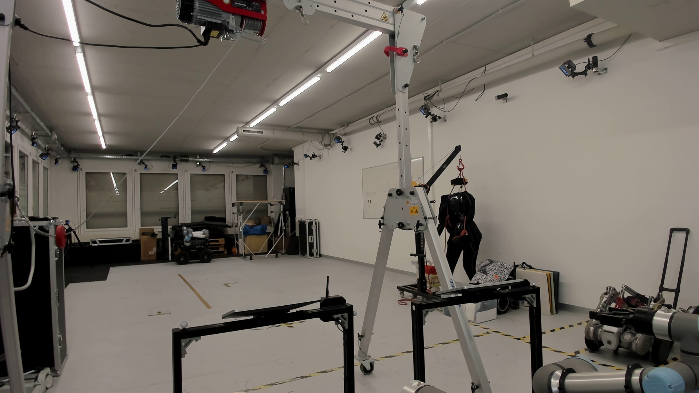
Workspace
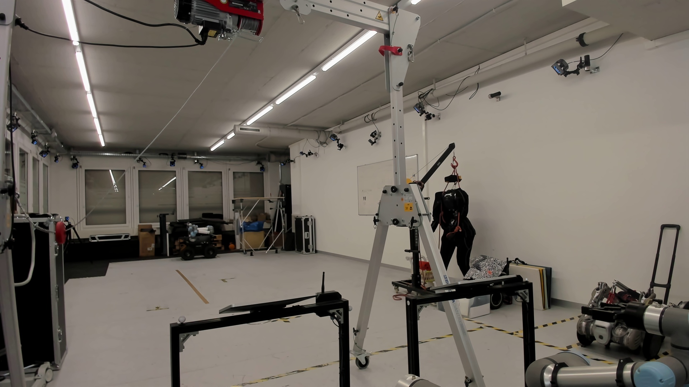
Workspace
Workspace
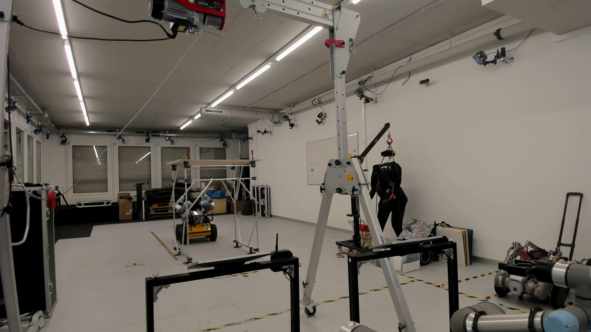
Workspace
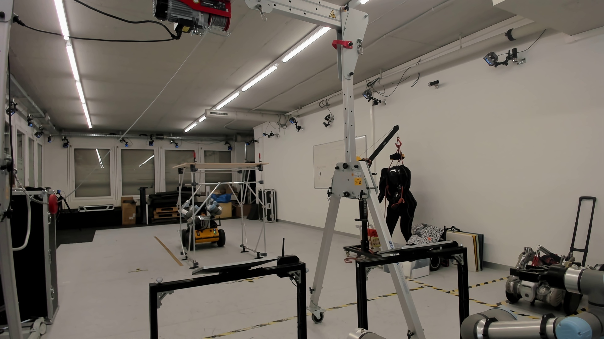
Workspace
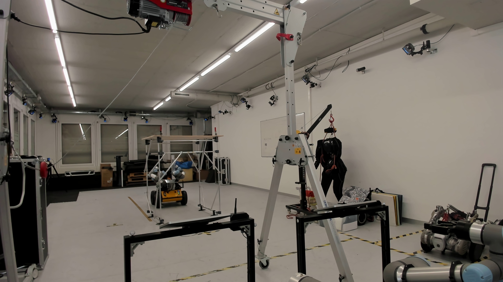
Workspace
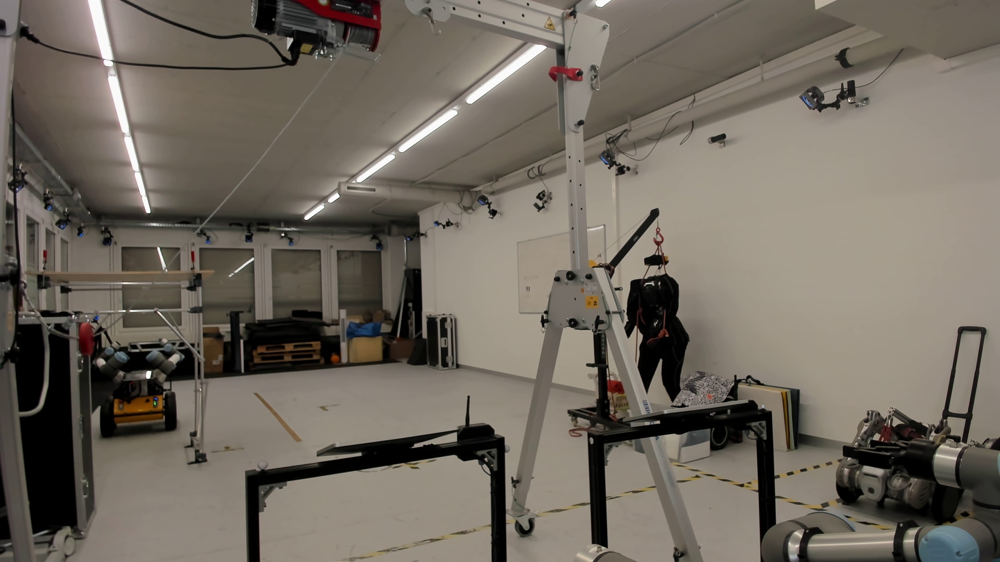
Workspace
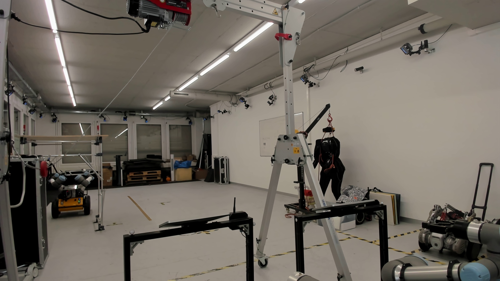
Workspace
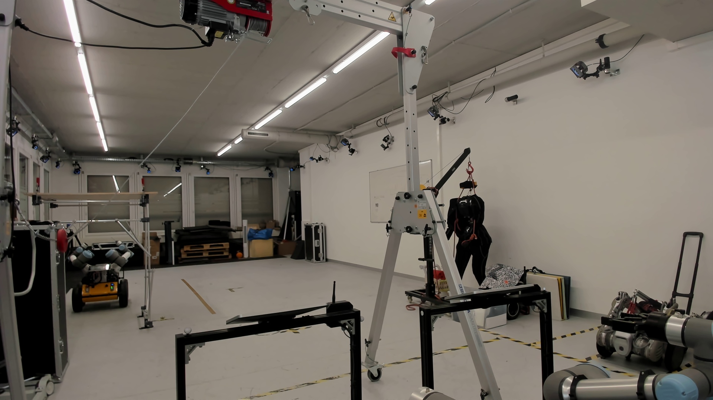
Workspace
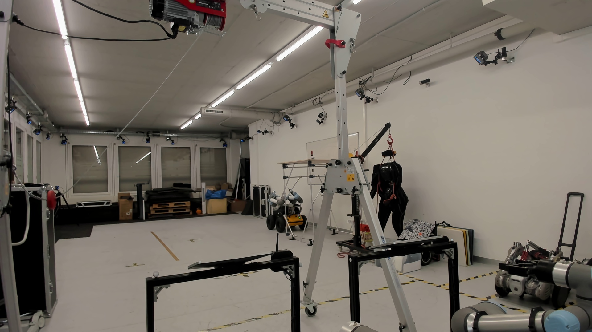
Workspace
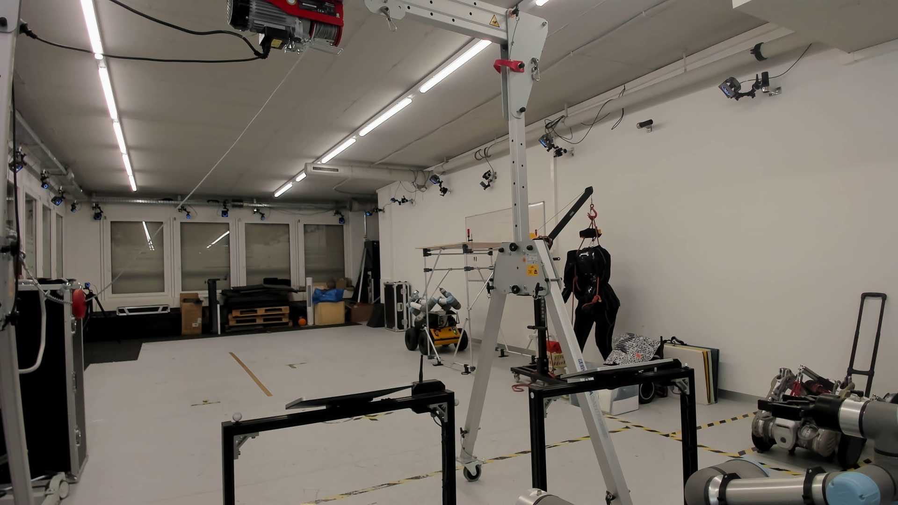
Workspace
created710.5 sec../reference_media/20260317_135256_ws_center_markers6_allcam_cover_take4--center--markers_6--cam_12--cover--take1/workspace_timelapse.mp4created710.5 sec../reference_media/20260317_135526_ws_right_markers6_allcam_cover_take4--right--markers_6--cam_12--cover--take1/workspace_timelapse.mp4created710.5 sec../reference_media/20260317_135753_ws_left_markers6_allcam_cover_take4--left--markers_6--cam_12--cover--take1/workspace_timelapse.mp4created710.5 sec../reference_media/20260317_140226_ws_back_markers6_allcam_cover_take4--back--markers_6--cam_12--cover--take1/workspace_timelapse.mp4created710.5 sec../reference_media/20260317_140859_ws_center_markers8_allcam_cover_take4--center--markers_8--cam_21--cover--take1/workspace_timelapse.mp4created710.5 sec../reference_media/20260317_141145_ws_right_markers8_allcam_cover_take4--right--markers_8--cam_21--cover--take1/workspace_timelapse.mp4created710.5 sec../reference_media/20260317_141520_ws_left_markers8_allcam_cover_take4--left--markers_8--cam_21--cover--take1/workspace_timelapse.mp4created710.5 sec../reference_media/20260317_141755_ws_back_markers8_allcam_cover_take4--back--markers_8--cam_21--cover--take1/workspace_timelapse.mp4created710.5 sec../reference_media/20260317_143058_ws_center_markers10_allcam_cover_take4--center--markers_10--cam_21--cover--take1/workspace_timelapse.mp4created710.5 sec../reference_media/20260317_143456_ws_right_markers10_allcam_cover_take4--right--markers_10--cam_21--cover--take1/workspace_timelapse.mp4created710.5 sec../reference_media/20260317_143655_ws_left_markers10_allcam_cover_take4--left--markers_10--cam_21--cover--take1/workspace_timelapse.mp4created710.5 sec../reference_media/20260317_143940_ws_back_markers10_allcam_cover_take4--back--markers_10--cam_21--cover--take1/workspace_timelapse.mp4ws_center_markers6_allcam_cover_take4 | center | markers_6 | Cam_12 | cover | take1: /home/yijiangh/ros2_ws/src/husky-assembly-teleop/data/mocap_experiments/20260317/20260317_cover_study_marker_adding/takes/20260317_135256_ws_center_markers6_allcam_cover_take4--center--markers_6--cam_12--cover--take1.json (2102 frames)workspace: ../photo_library/ws_center_markers6_allcam_cover_take4__workspace.jpgws_right_markers6_allcam_cover_take4 | right | markers_6 | Cam_12 | cover | take1: /home/yijiangh/ros2_ws/src/husky-assembly-teleop/data/mocap_experiments/20260317/20260317_cover_study_marker_adding/takes/20260317_135526_ws_right_markers6_allcam_cover_take4--right--markers_6--cam_12--cover--take1.json (2100 frames)workspace: ../photo_library/ws_right_markers6_allcam_cover_take4__workspace.jpgws_left_markers6_allcam_cover_take4 | left | markers_6 | Cam_12 | cover | take1: /home/yijiangh/ros2_ws/src/husky-assembly-teleop/data/mocap_experiments/20260317/20260317_cover_study_marker_adding/takes/20260317_135753_ws_left_markers6_allcam_cover_take4--left--markers_6--cam_12--cover--take1.json (2102 frames)workspace: ../photo_library/ws_left_markers6_allcam_cover_take4__workspace.jpgws_back_markers6_allcam_cover_take4 | back | markers_6 | Cam_12 | cover | take1: /home/yijiangh/ros2_ws/src/husky-assembly-teleop/data/mocap_experiments/20260317/20260317_cover_study_marker_adding/takes/20260317_140226_ws_back_markers6_allcam_cover_take4--back--markers_6--cam_12--cover--take1.json (2101 frames)workspace: ../photo_library/ws_back_markers6_allcam_cover_take4__workspace.jpgws_center_markers8_allcam_cover_take4 | center | markers_8 | Cam_21 | cover | take1: /home/yijiangh/ros2_ws/src/husky-assembly-teleop/data/mocap_experiments/20260317/20260317_cover_study_marker_adding/takes/20260317_140859_ws_center_markers8_allcam_cover_take4--center--markers_8--cam_21--cover--take1.json (2101 frames)workspace: ../photo_library/ws_center_markers8_allcam_cover_take4__workspace.jpgws_right_markers8_allcam_cover_take4 | right | markers_8 | Cam_21 | cover | take1: /home/yijiangh/ros2_ws/src/husky-assembly-teleop/data/mocap_experiments/20260317/20260317_cover_study_marker_adding/takes/20260317_141145_ws_right_markers8_allcam_cover_take4--right--markers_8--cam_21--cover--take1.json (2101 frames)workspace: ../photo_library/ws_right_markers8_allcam_cover_take4__workspace.jpgws_left_markers8_allcam_cover_take4 | left | markers_8 | Cam_21 | cover | take1: /home/yijiangh/ros2_ws/src/husky-assembly-teleop/data/mocap_experiments/20260317/20260317_cover_study_marker_adding/takes/20260317_141520_ws_left_markers8_allcam_cover_take4--left--markers_8--cam_21--cover--take1.json (2101 frames)workspace: ../photo_library/ws_left_markers8_allcam_cover_take4__workspace.jpgws_back_markers8_allcam_cover_take4 | back | markers_8 | Cam_21 | cover | take1: /home/yijiangh/ros2_ws/src/husky-assembly-teleop/data/mocap_experiments/20260317/20260317_cover_study_marker_adding/takes/20260317_141755_ws_back_markers8_allcam_cover_take4--back--markers_8--cam_21--cover--take1.json (2101 frames)workspace: ../photo_library/ws_back_markers8_allcam_cover_take4__workspace.jpgws_center_markers10_allcam_cover_take4 | center | markers_10 | Cam_21 | cover | take1: /home/yijiangh/ros2_ws/src/husky-assembly-teleop/data/mocap_experiments/20260317/20260317_cover_study_marker_adding/takes/20260317_143058_ws_center_markers10_allcam_cover_take4--center--markers_10--cam_21--cover--take1.json (2101 frames)workspace: ../photo_library/ws_center_markers10_allcam_cover_take4__workspace.jpgws_right_markers10_allcam_cover_take4 | right | markers_10 | Cam_21 | cover | take1: /home/yijiangh/ros2_ws/src/husky-assembly-teleop/data/mocap_experiments/20260317/20260317_cover_study_marker_adding/takes/20260317_143456_ws_right_markers10_allcam_cover_take4--right--markers_10--cam_21--cover--take1.json (2100 frames)workspace: ../photo_library/ws_right_markers10_allcam_cover_take4__workspace.jpgws_left_markers10_allcam_cover_take4 | left | markers_10 | Cam_21 | cover | take1: /home/yijiangh/ros2_ws/src/husky-assembly-teleop/data/mocap_experiments/20260317/20260317_cover_study_marker_adding/takes/20260317_143655_ws_left_markers10_allcam_cover_take4--left--markers_10--cam_21--cover--take1.json (2101 frames)workspace: ../photo_library/ws_left_markers10_allcam_cover_take4__workspace.jpgws_back_markers10_allcam_cover_take4 | back | markers_10 | Cam_21 | cover | take1: /home/yijiangh/ros2_ws/src/husky-assembly-teleop/data/mocap_experiments/20260317/20260317_cover_study_marker_adding/takes/20260317_143940_ws_back_markers10_allcam_cover_take4--back--markers_10--cam_21--cover--take1.json (2101 frames)workspace: ../photo_library/ws_back_markers10_allcam_cover_take4__workspace.jpg